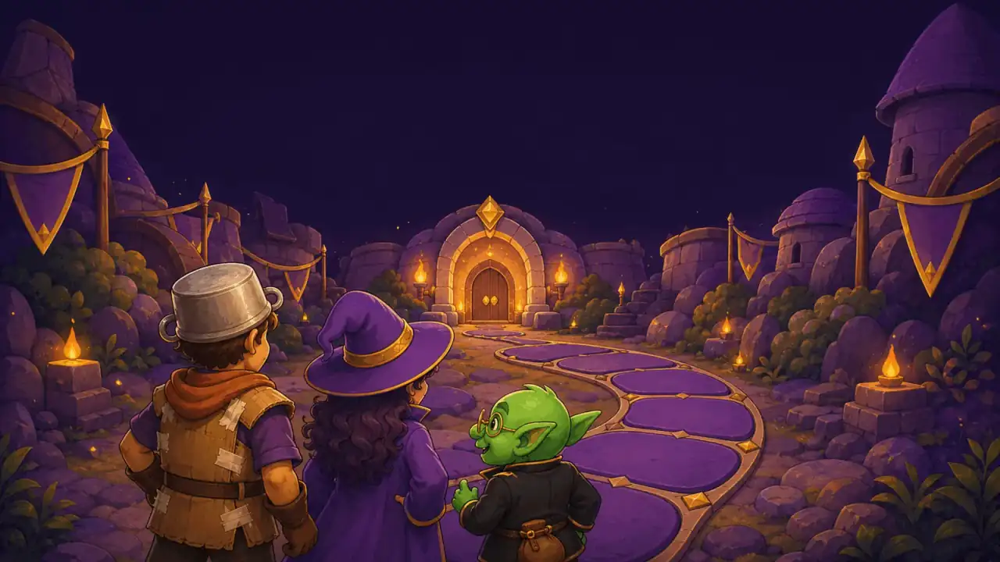

LE DONJON DU SAVOIR
Se cultiver en jouant — 1 à 20 aventuriers, aucune montre au mur.
« Oyez ! Ici, chaque question offre son anecdote, et nul chronomètre ne viendra jamais vous presser. Parole de Héraut. »
📖 Les règles du Donjon
Le but
Avancez sur le plateau en lançant le dé. Le premier pion qui atteint le Trésor 🏆 gagne. Personne n'est jamais éliminé, et rien n'est jamais chronométré : prenez le temps de réfléchir (et de digérer les anecdotes).
Les cases
❓ Question (bonne réponse : avancez + 1 pièce) · 🍀 Chance · 🎪 Événement (tout le monde répond, +2 pièces par bonne réponse) · 💀 Coup dur · 🪙 Pièces · 🃏 Joker (recharge un pouvoir) · 🎲 Gambit (annoncez un nombre, les autres parient trop haut / trop bas / juste) · 🕳️ Trou Noir (question redoutable : +3 cases ou recul de 6).
Les questions
QCM (+2 cases), Vrai/Faux (+1), CASH / CARRÉ / DUO — choisissez votre risque avant de voir les choix (+4 / +2 / +1) —, Pari de confiance — évaluez-vous de 1 à 10 avant de voir la question —, questions ouvertes jugées par la table. Après chaque question, l'anecdote du Héraut s'affiche avec ses sources : on repart toujours moins bête.
Les compagnons (1 pouvoir par partie, rechargeable 🃏 ou 8 🪙)
L'esprit du jeu
Le profil 👶 enfant garantit des questions adaptées (elles conviennent à tous). Le premier du classement pioche plus dur, le dernier reçoit un coup de pouce. En équipe, un porte-parole différent répond à chaque question — tout le monde joue.
✍️ Vos questions maison
Écrites par la table, mélangées à la banque du Donjon (sur cet appareil uniquement). Marquées 🏠 en jeu — idéal pour piéger les parents.
⚙️ Réglages
Confort et accessibilité — vos choix sont mémorisés sur cet appareil.